📅 08/11/2026
Chìa khóa bị gãy kẹt trong ổ: cách xử lý đúng và khi nào phải gọi thợ
Chìa vừa gãy đừng dán keo 502, đừng đút chìa khác vào đẩy: đưa ổ về vị trí 12 giờ, mảnh còn nhô thì kẹp kéo thẳng ra — và các dấu hiệu phải dừng tay gọi thợ để giữ nguyên ổ zin.
Đọc tiếp →
📅 07/11/2026
Chìa khóa ô tô hết pin: mở cửa và nổ máy bằng chìa cơ giấu trong smartkey
Remote bấm không ăn đừng vội kết luận hỏng chìa: rút chìa cơ giấu trong smartkey để mở cửa, áp chìa vào nút Start/Stop là nổ máy được — kèm dấu hiệu pin yếu và cách thay pin đúng loại CR2032, CR2025.
Đọc tiếp →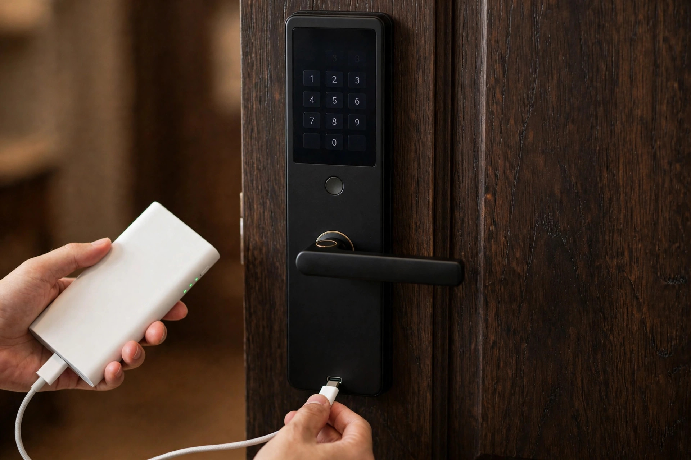
📅 07/11/2026
Khóa vân tay hết pin đột ngột: 3 cách vào nhà mà không cần phá khóa
Quét vân tay im lìm, màn hình tối om cũng không cần phá khóa: chìa cơ dự phòng, cấp nguồn khẩn cấp bằng sạc dự phòng hoặc pin 9V — thứ tự xử lý đúng, lỗi cất chìa cơ trong nhà và cách thay pin kiềm Alkaline.
Đọc tiếp →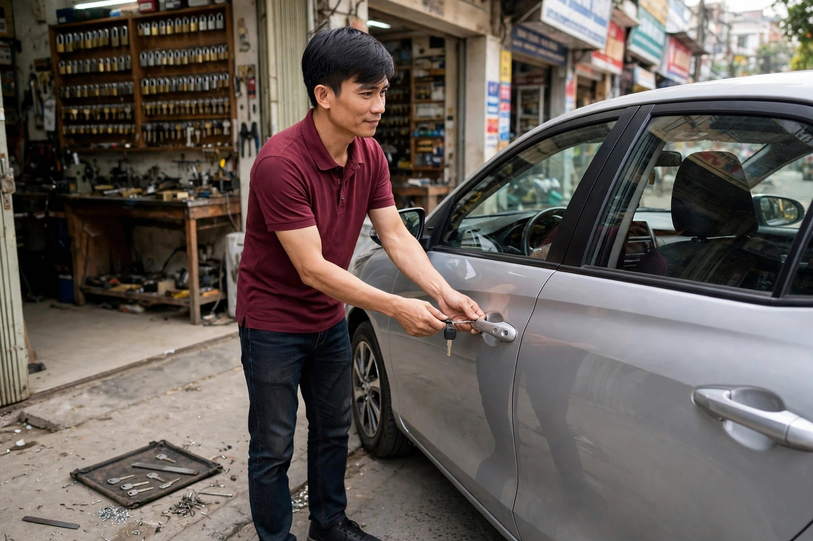
📅 06/11/2026
Mất chìa xe đừng vội thay ổ khóa: giữ ổ zin theo xe, cấp lại chìa mới là đủ
Ổ theo xe là hàng chính hãng tốt nhất trên chiếc xe — thay ổ rẻ trôi nổi thường thành dở. Cách cấp lại chìa theo ổ cũ, sắp lại bi để chìa cũ hết tác dụng, và sự thật về chuyện vặn chìa mạnh tay.
Đọc tiếp →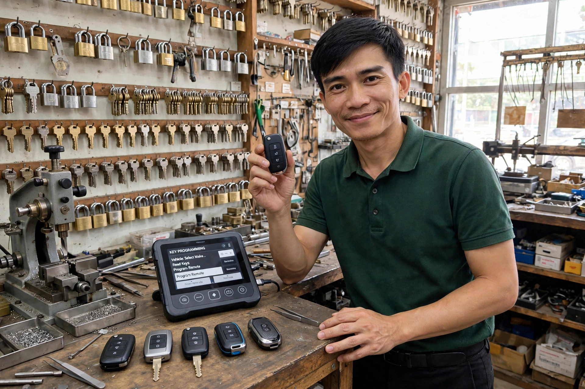
📅 05/11/2026
Vì sao hai chìa ô tô giống hệt nhau mà một cái không nổ máy? 4 lớp bảo mật theo hãng
Cắt rãnh giống hệt mới chỉ xong 1 trong 4 lớp của chiếc chìa. Dấu dập G, H trên chìa Toyota, mã PIN 6 số của Hyundai/Kia và cửa ải riêng của từng hãng khi mất hết chìa.
Đọc tiếp →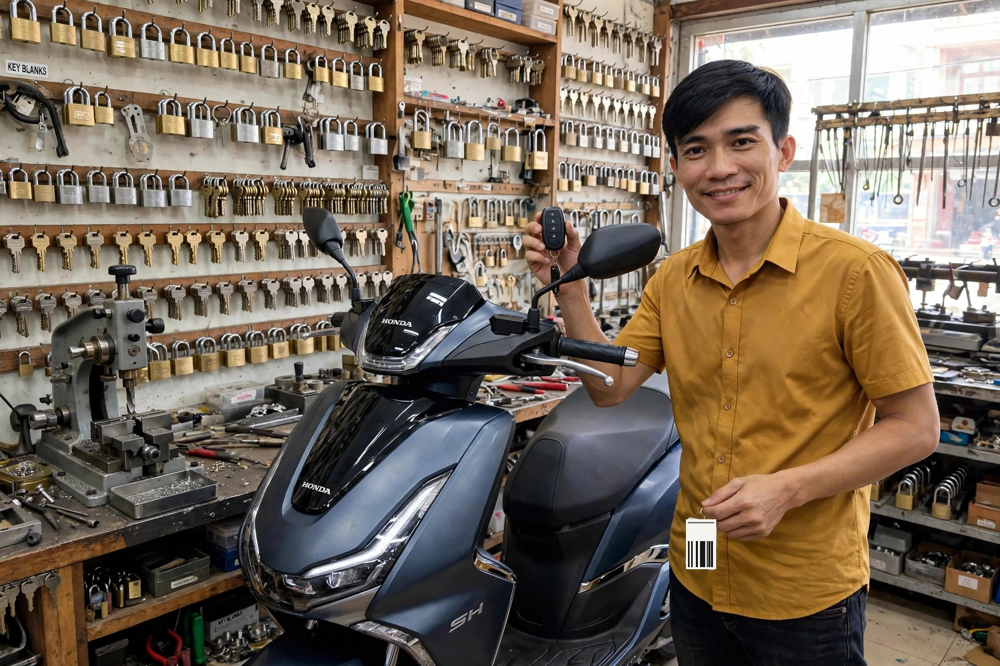
📅 05/11/2026
Smartkey xe máy Honda và Yamaha khác nhau ở đâu? Từ SCU đến mã ID 9 số và 6 số
Cùng là smartkey núm vặn nhưng hai hãng khác nhau ở gần như mọi chi tiết thợ phải chạm vào: số nút trên remote, mã ID 9 số và 6 số, và cách cứu khi mất hết remote.
Đọc tiếp →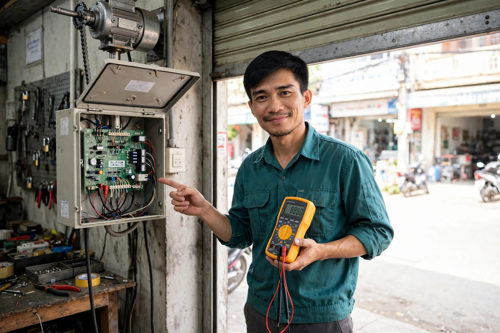
📅 05/11/2026
Cửa cuốn gồm những bộ phận nào? Thân cửa, mô-tơ, phanh hãm, hộp điều khiển và bình lưu điện
Thân cửa, lò xo trợ lực trong trục, phanh điện từ trong mô-tơ, hai bình ắc quy trong bộ lưu điện — hiểu kết cấu thì nghe tiếng cửa chạy là đoán được bệnh nằm ở đâu.
Đọc tiếp →
📅 05/11/2026
Khóa vân tay kêu bíp, báo lỗi liên tục: bảng tra theo hãng Samsung, Philips, Kaadas
Samsung báo lỗi bằng giai điệu, Philips và Kaadas bằng giọng nói. Tra đúng tín hiệu thì biết ngay là pin yếu, bị khóa tạm vì nhập sai, hay chốt đang bị cản vì cửa xệ.
Đọc tiếp →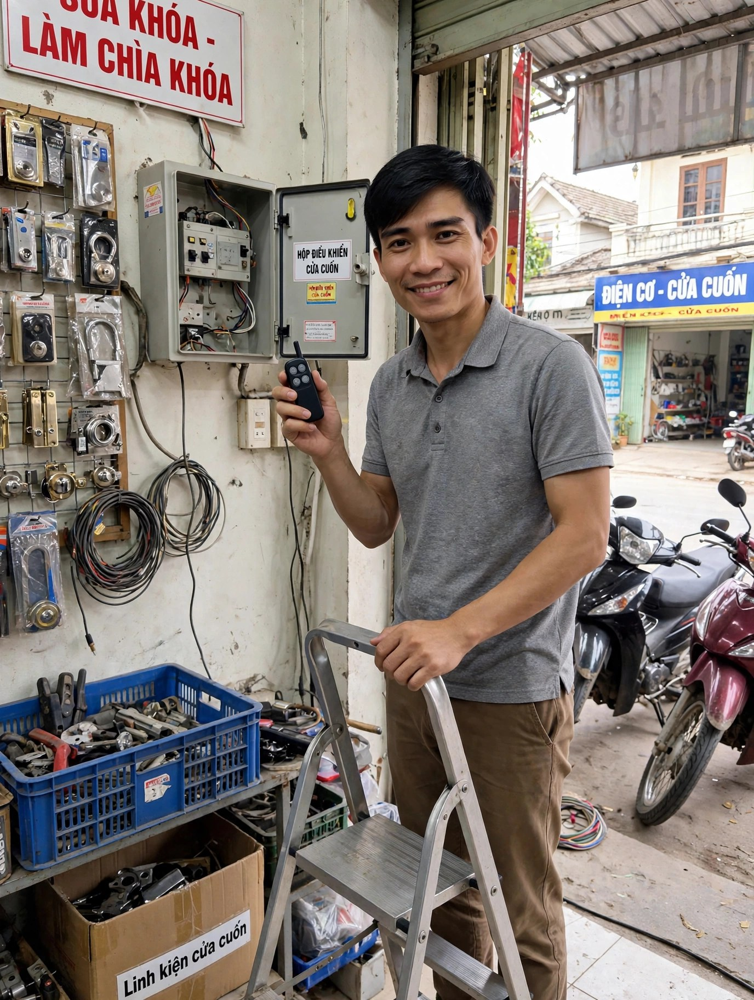
📅 04/11/2026
Remote cửa cuốn mã gạt và mã nhảy khác nhau thế nào? Mất remote phải xóa mã cũ
Mở nắp remote là biết ngay thuộc loại nào. Và khi mất remote, chép thêm cái mới là chưa đủ — mã của chiếc remote đã mất vẫn còn nằm trong hộp điều khiển.
Đọc tiếp →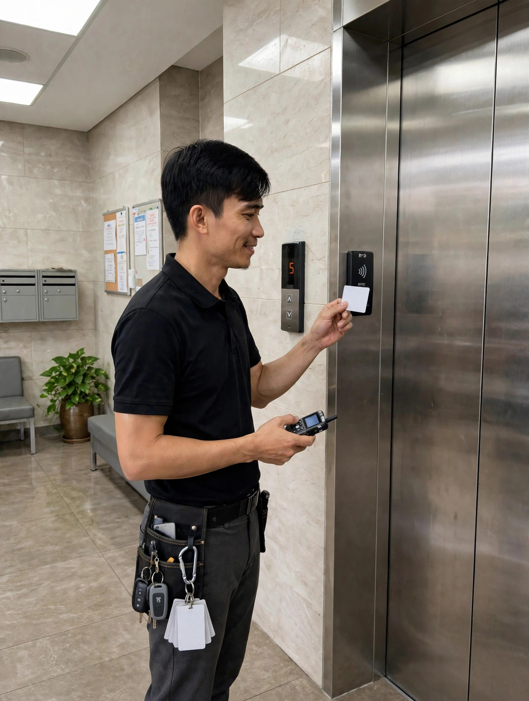
📅 04/11/2026
Mất thẻ từ chung cư: làm thẻ mới và nhớ xóa thẻ cũ khỏi hệ thống
Thẻ từ chỉ là một mã số trong hệ thống của tòa nhà. Không khóa mã thẻ đã mất thì ai nhặt được vẫn qua cổng, bấm thang máy như một cư dân bình thường.
Đọc tiếp →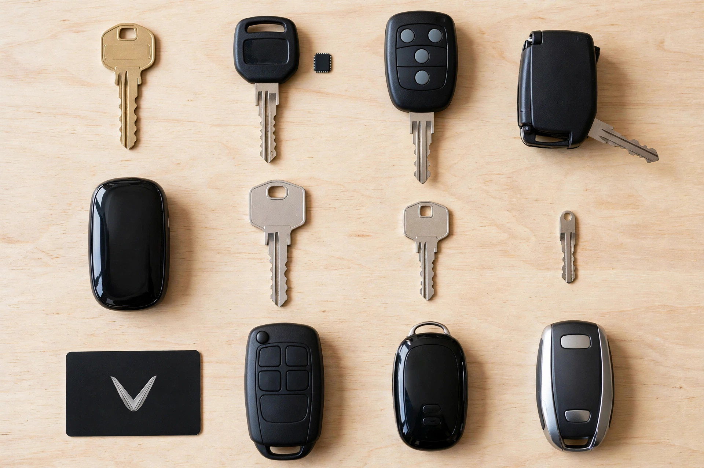
📅 03/11/2026
13 loại chìa khóa ô tô phổ biến — xe của bạn đang dùng loại nào?
Chìa cơ, chìa chip, remote, chìa gập, smartkey, thẻ chìa… Nhận đúng loại chìa xe mình đang dùng để hiểu vì sao có ca làm chìa rẻ, có ca lại đắt.
Đọc tiếp →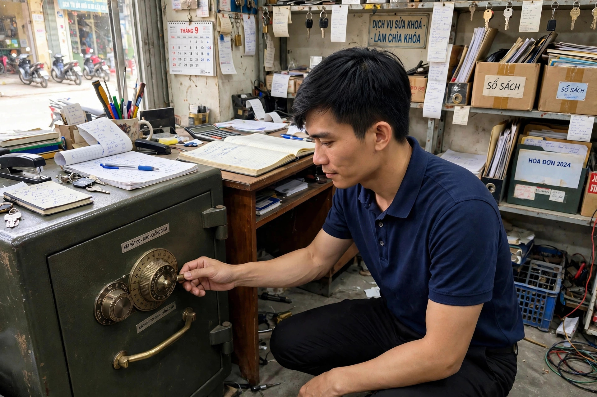
📅 03/11/2026
Két sắt cơ quên mã số, tay quay cứng: đừng tra dầu, đừng gõ búa
Két cơ không có pin cũng chẳng có chìa giải cứu điện tử — quên số là phải xử lý trên cơ cấu đĩa. Hai việc tuyệt đối đừng làm: tra dầu bừa và gõ búa vào tay quay.
Đọc tiếp →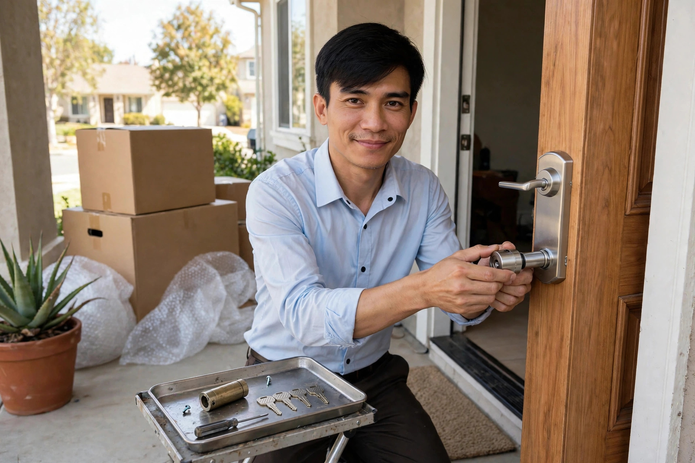
📅 03/11/2026
Chuyển nhà mới đừng thay cả bộ khóa — chỉ thay lõi khóa là chìa cũ vô hiệu
Vừa nhận nhà mà vẫn dùng ổ khóa của chủ cũ thì chìa cũ vẫn mở được cửa nhà bạn. Chỉ thay lõi là toàn bộ chìa cũ vô hiệu, giữ nguyên tay gạt đẹp sẵn có.
Đọc tiếp →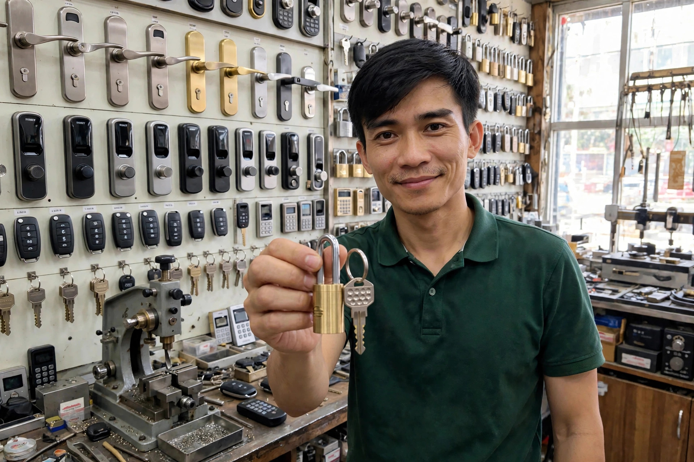
📅 03/11/2026
Lõi khóa chìa vi tính cho cửa chính: nhìn 4 điểm này là biết lõi tốt hay dỏm
Hai lõi khóa trông giống hệt nhau mà chênh giá vài lần — khác biệt nằm ở chất liệu, cấu tạo bi, khả năng chống khoan và độ vừa khi lắp. Nhìn 4 điểm này là biết.
Đọc tiếp →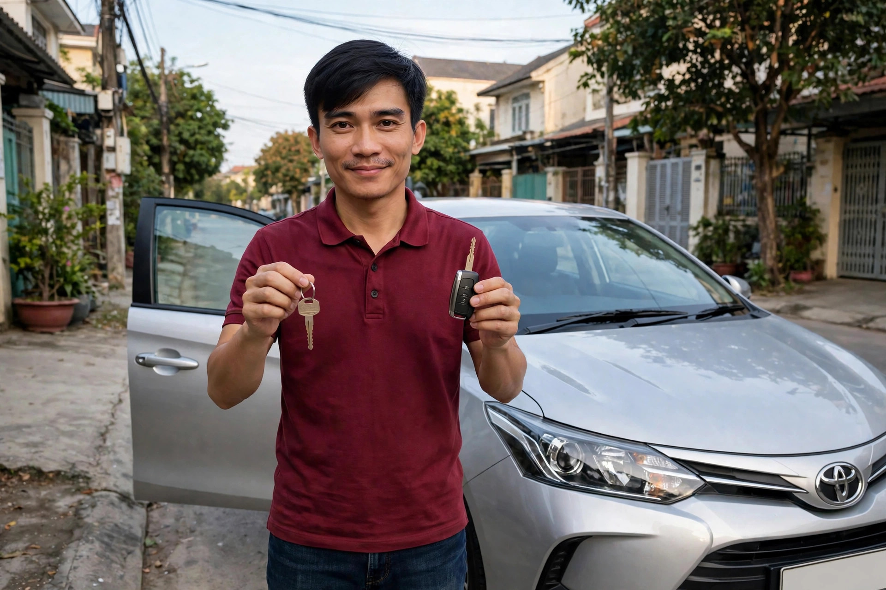
📅 03/11/2026
Độ chìa thẳng thành chìa gập cho Toyota Vios, Hyundai Accent, Kia Morning: giữ mạch zin, gọn túi hẳn
Chìa thẳng cấn túi, nhanh mòn: độ thành chìa gập giữ nguyên mạch và chip zin, không lập trình lại. Lưu ý quan trọng về con chip từ trong đầu chìa.
Đọc tiếp →📅 03/11/2026
Mất hết smartkey ô tô Toyota Fortuner, Mazda CX-5: làm lại từ đầu và xóa mã chìa cũ trong ECU
Làm lại smartkey mới chỉ là nửa việc — phải xóa mã chìa đã mất khỏi ECU, nếu không chìa cũ vẫn nổ máy xe bạn được. Quy trình thợ làm từ đầu.
Đọc tiếp →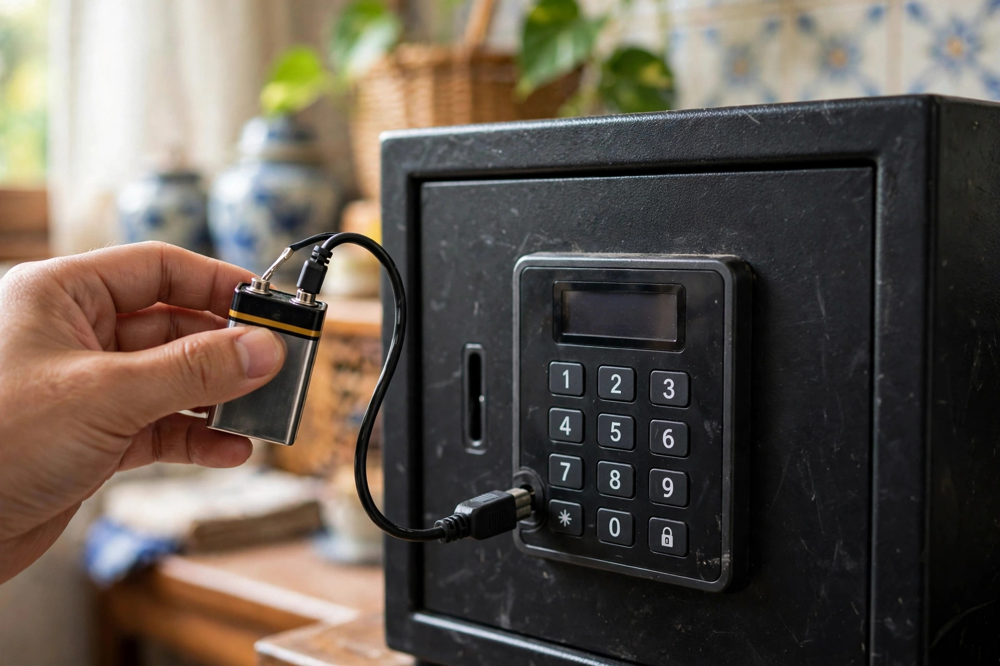
📅 02/11/2026
Két sắt bấm đúng mã vẫn không mở — thường chỉ là hết pin, đừng vội phá két
Màn hình mờ, bíp yếu, mô-tơ rè là dấu hiệu pin yếu. Cách cấp nguồn tạm bằng pin 9V, dùng chìa cơ dự phòng và khi nào cần gọi thợ.
Đọc tiếp →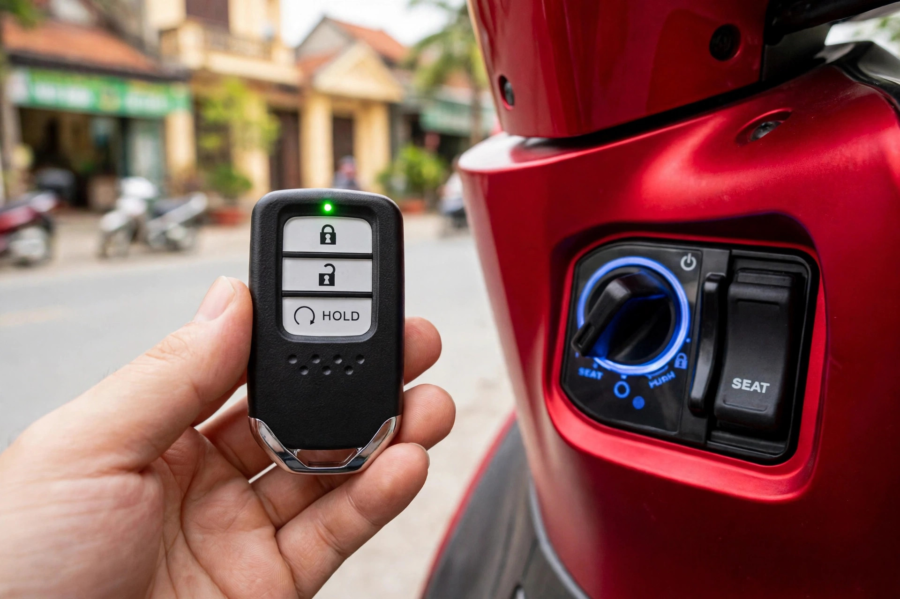
📅 02/11/2026
Smartkey Honda SH, Vision, Air Blade vặn núm không lên điện — kiểm tra 3 thứ này trước
Đa số chỉ là remote hết pin CR2032, bị nhiễu sóng hoặc yếu bình xe. Cách phân biệt từng trường hợp và mở khẩn cấp bằng mã ID.
Đọc tiếp →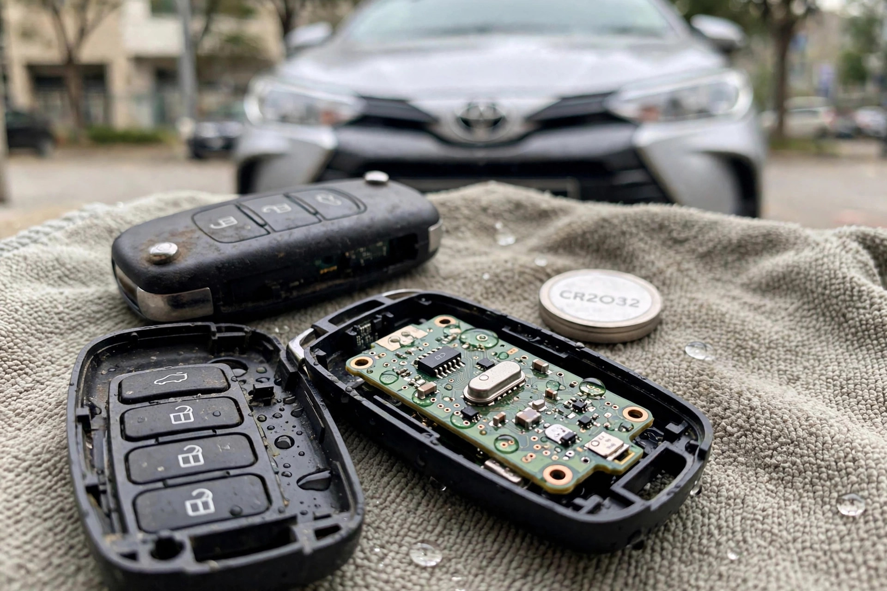
📅 02/11/2026
Remote ô tô bị vào nước — đừng bấm thử liên tục, tháo pin ngay
Bấm thử khi mạch còn ướt là chập mạch, hỏng hẳn. Đúng thứ tự xử lý: ngừng bấm, tháo pin, làm khô đúng cách và sao chép dự phòng sớm.
Đọc tiếp →📅 02/11/2026
Mất hết chìa xe máy thường — thợ làm lại chìa từ chính ổ khóa
Không cần thay cả bộ ổ tốn kém: thợ đọc rãnh trong ruột ổ rồi cắt chìa mới theo đúng thông số, giữ nguyên ổ zin theo xe.
Đọc tiếp →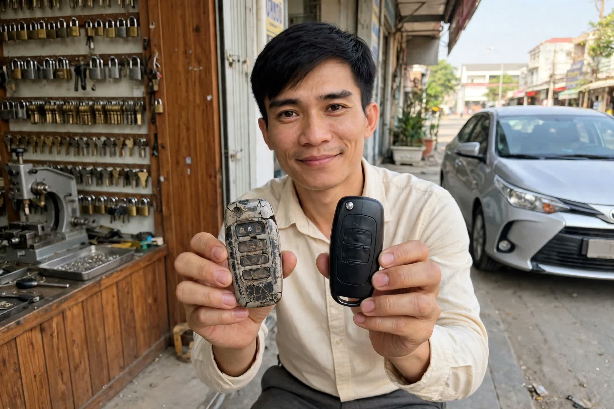
📅 01/11/2026
Vỏ remote ô tô nứt vỡ, nút bấm mòn — đừng vội thay cả chìa
Mạch còn tốt thì chỉ cần thay vỏ mới, giữ nguyên mạch và chìa cũ — remote lại như mới với chi phí chỉ bằng một phần nhỏ.
Đọc tiếp →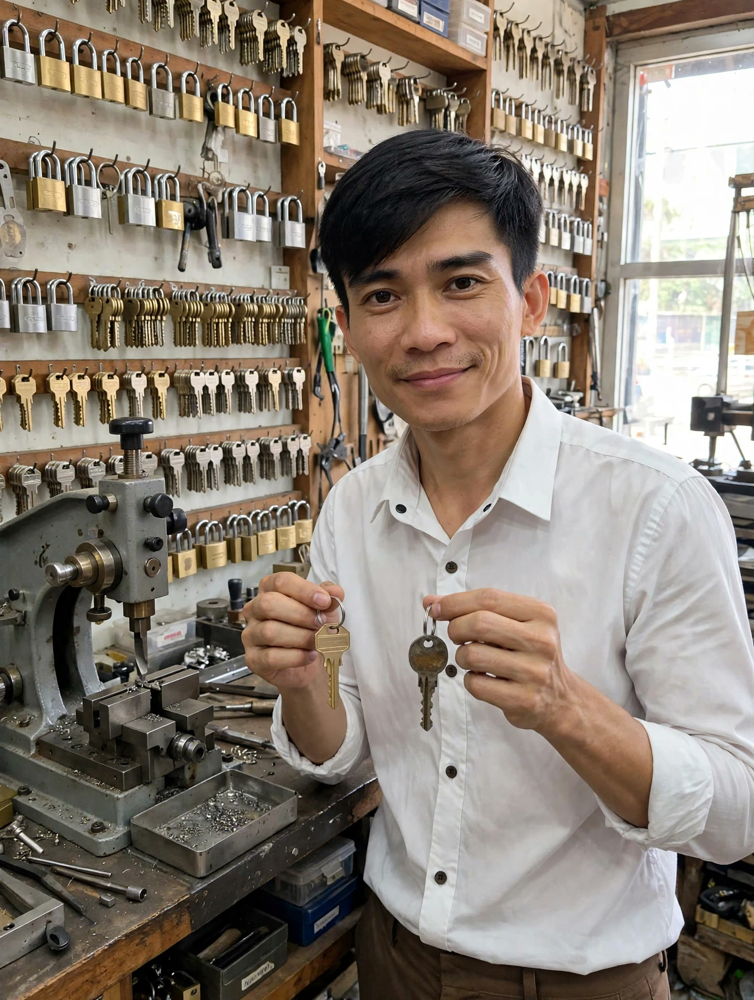
📅 01/11/2026
Chìa mới cắt bị gằn, tra vào cứ khựng?
Đừng cố vặn mạnh — xử lý ba via trên chìa mới đúng cách để không gãy chìa trong ổ.
Đọc tiếp →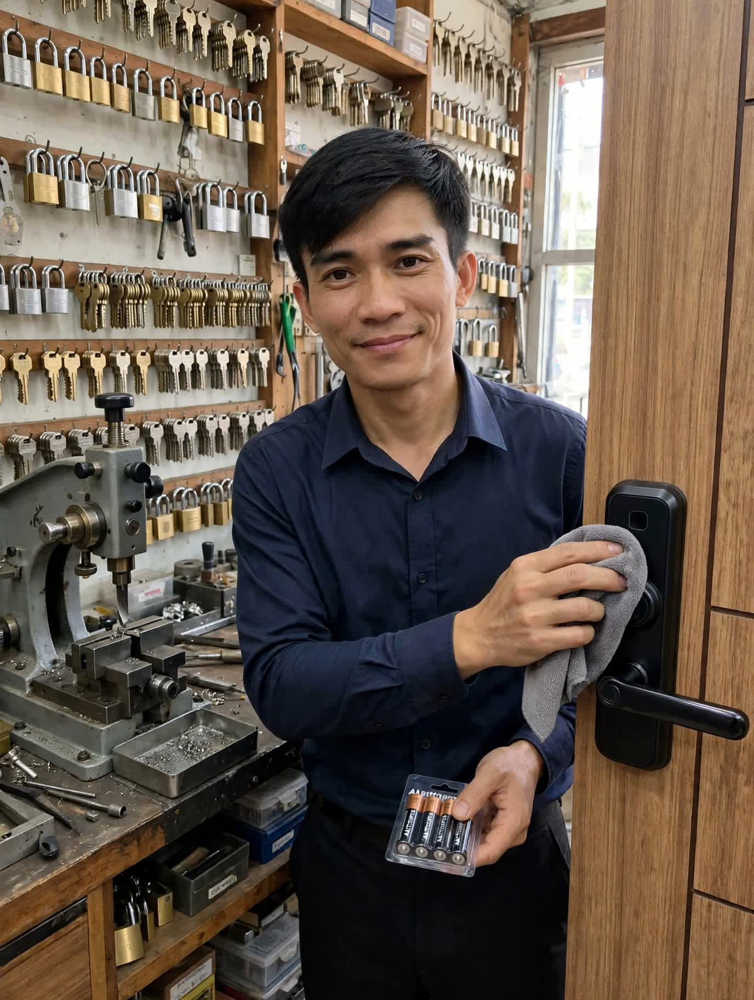
📅 01/11/2026
Khóa vân tay quét mãi không nhận, báo pin yếu
Lau cảm biến, thay cả bộ pin mới đúng cách — kiểm tra 2 việc này trước khi nghĩ khóa hỏng.
Đọc tiếp →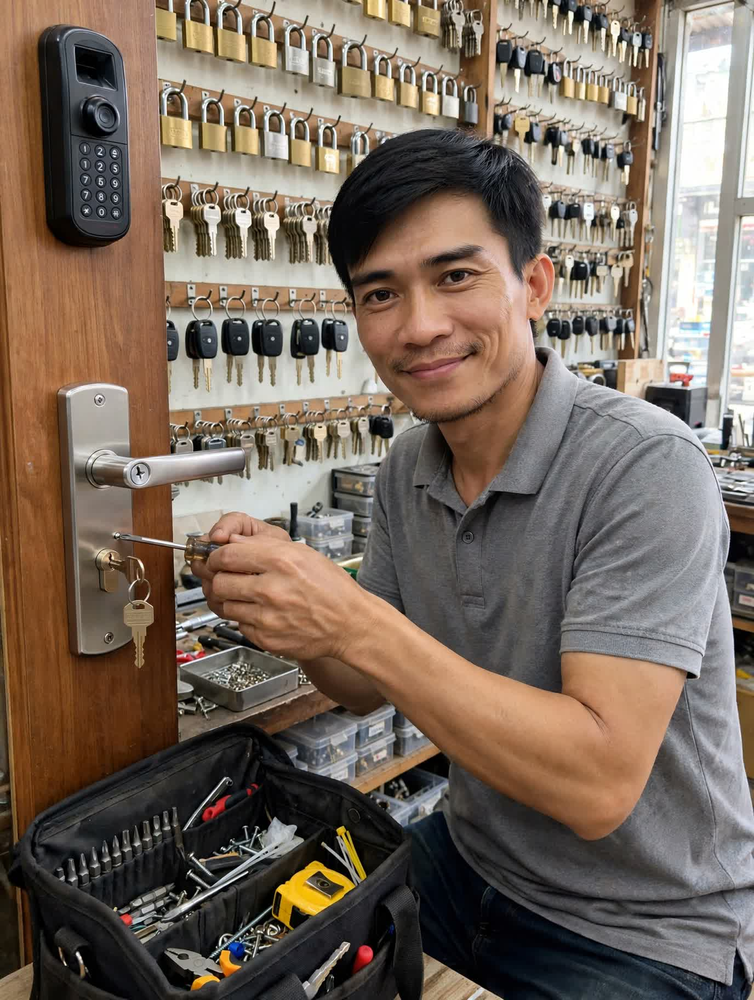
📅 01/11/2026
Tay nắm cửa rơ lắc, khóa kêu kẹt kẹt
Thử siết lại ốc mặt ốp và ốc thân khóa — nhiều trường hợp xử lý xong chưa cần gọi thợ.
Đọc tiếp →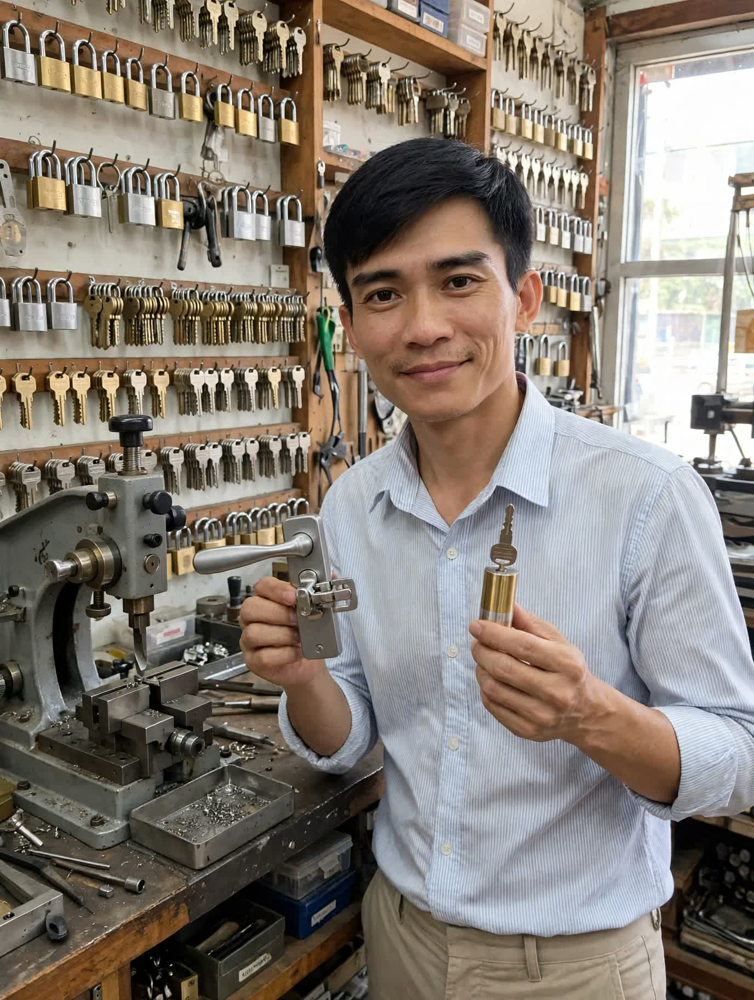
📅 31/10/2026
4 mẹo dùng khóa đúng cách, tránh hỏng ổ khóa
Không tra dầu ăn vào ổ kẹt, cắt sẵn chìa dự phòng, đừng treo chùm chìa nặng vào ổ xe máy...
Đọc tiếp →